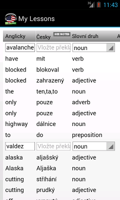
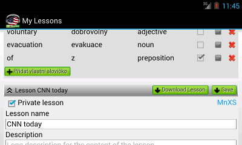

Otevřete poslední záložku CREATE NEW v sekci My Lessons. Pak stisněte "Nahrát nové kartičky" a pak "Vytvořit lekci".
Otevřete poslední záložku CREATE NEW v sekci My Lessons. Pak stisněte "Nahrát nové kartičky" a pak "Vytvořit lekci".
Otevřete poslední záložku CREATE NEW v sekci My Lessons. Pak stisněte "Nahrát nové kartičky" a pak "Vytvořit lekci".
Otevřete poslední záložku CREATE NEW v sekci My Lessons. Pak stisněte "Nahrát nové kartičky" a pak "Vytvořit lekci".
 Na další stránce zadejte jméno lekce a vložte požadovaný text.
Na další stránce zadejte jméno lekce a vložte požadovaný text. V dalším kroku program rozpozná která slovíčka jsou již v databázi a která ve slovníku nejsou. Doplňte slovíčka a překlady podle potřeby.
U slovíček z databáze se automaticky použije výslovnost. U nových slovíček se použije syntetizér Text-To-Speech.
V průběhu editace máte možnost
Během editace se změny průbežně ukládají a k rozpracované lekci se můžete vrátit během 24 hodin.
Hotovou lekci uložte a podle potřeby stáhněte do telefonu stisknutím tlačítka "Download Lesson".
Stažená lekce se Vám ihned nabídne k procvičení.
Prvním spuštěním lekce se aktivují všechny kartičky a vloží se do Vašeho učícího procesu.